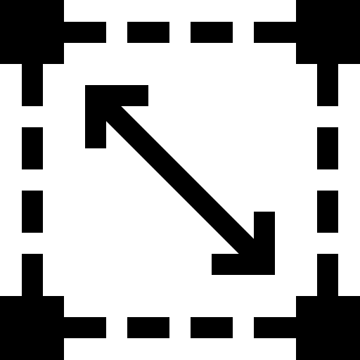
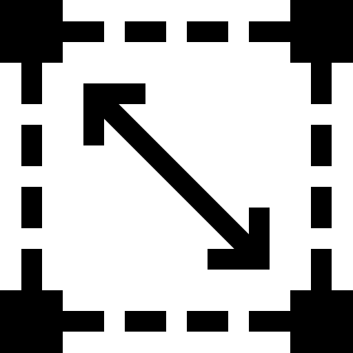

Tabla con la información del país
| Población: |  | 6.2 millones |
| Tamaño: |  | 100k km² |
| Continente: | África | |
| Lugar emblemático: |  | |
| Para más información: |  | wikipedia.com |
 Sudáfrica
Sudáfrica
| Población: | | 6.2 millones |
| Tamaño: |  | 100k km² |
| Continente: | África | |
| Lugar emblemático: | | |
| Para más información: | | wikipedia.com |